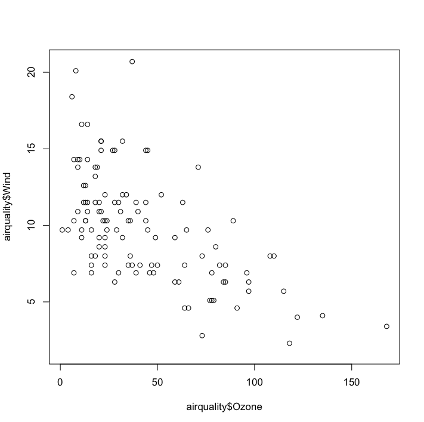

Lecture: Introduction to R
Collect your findings on ilearn. Time: 10 Minutes
Getting an overview of the data
str(airquality)
'data.frame': 111 obs. of 6 variables:
$ Ozone : int 41 36 12 18 23 19 8 16 11 14 ...
$ Solar.R: int 190 118 149 313 299 99 19 256 290 274 ...
$ Wind : num 7.4 8 12.6 11.5 8.6 13.8 20.1 9.7 9.2 10.9 ...
$ Temp : int 67 72 74 62 65 59 61 69 66 68 ...
$ Month : int 5 5 5 5 5 5 5 5 5 5 ...
$ Day : int 1 2 3 4 7 8 9 12 13 14 ... `
head(airquality, n=3)
Ozone Solar.R Wind Temp Month Day
1 41 190 7.4 67 5 1
2 36 118 8.0 72 5 2
3 12 149 12.6 74 5 3
tail(airquality, n=3)
Ozone Solar.R Wind Temp Month Day
109 14 191 14.3 75 9 28
110 18 131 8.0 76 9 29
111 20 223 11.5 68 9 30
summary(airquality)
Ozone Solar.R Wind Temp Month Day
Min. : 1.0 Min. : 7.0 Min. : 2.30 Min. :57.00 Min. :5.000 Min. : 1.00
1st Qu.: 18.0 1st Qu.:113.5 1st Qu.: 7.40 1st Qu.:71.00 1st Qu.:6.000 1st Qu.: 9.00
Median : 31.0 Median :207.0 Median : 9.70 Median :79.00 Median :7.000 Median :16.00
Mean : 42.1 Mean :184.8 Mean : 9.94 Mean :77.79 Mean :7.216 Mean :15.95
3rd Qu.: 62.0 3rd Qu.:255.5 3rd Qu.:11.50 3rd Qu.:84.50 3rd Qu.:9.000 3rd Qu.:22.50
Max. :168.0 Max. :334.0 Max. :20.70 Max. :97.00 Max. :9.000 Max. :31.00
Library
library(help="graphics")
plot(airquality$0zone)
plot(airquality$0zone, airquality$wind)

plot(airquality)
plot(airquality$Ozone, type= "b")
plot(airquality$Ozone, type= "h")
?plot()
Editing Titles, Labels
plot(airquality$Ozone, xlab = 'ozone Concentration', ylab = 'No of Instances', main = 'Ozone levels in NY city', col = 'green')barplot()
horiz=T:horizontalhoriz=F:verticalhist()boxplot()